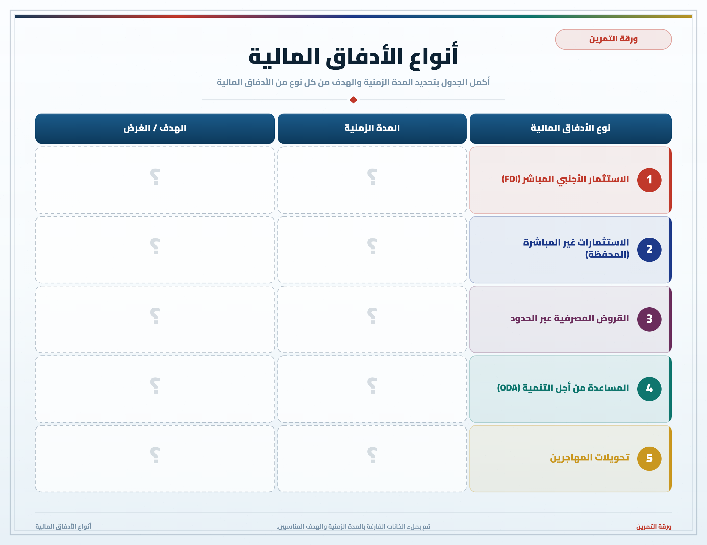
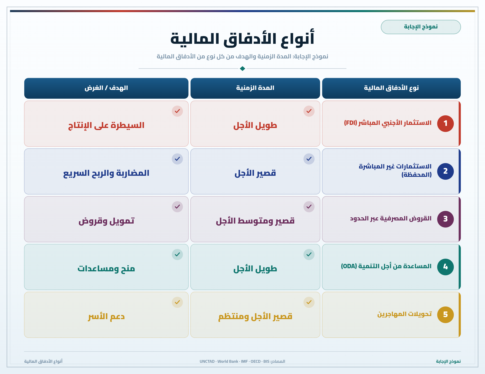

تمارين – الأدفاق المالية: المظاهر
- الاستثمار الأجنبي المباشر:
- استثمار طويل المدى توظفه شركة عبر قطرية خارج بلدها الأصلي لشراء مؤسسة اقتصادية أو حصة لا تقل عن 10% من رأسمالها أو لبعث فروع ووحدات إنتاج جديدة تابعة لها.
- الاستثمارات غير المباشرة:
- استثمارات تقوم بها المؤسسات المالية على مدى قصير بهدف المضاربة، وتتمثل في شراء الأوراق المالية كالأسهم والسندات.
- الأسهم:
- صكوك ملكية حصة من رأسمال شركة تعطي لحاملها حق التصويت في الجلسات العامة للشركات.
- السندات:
- صكوك تصدرها الدول أو الشركات المقترضة في إطار قروض رقاعية، مقابل ضمان نسبة فائدة قارة واسترجاع قيمة السند في نهاية المدة.
| السنة | 1990 | 2000 | 2010 | 2015 | 2020 | 2021 |
|---|---|---|---|---|---|---|
| أدفاق الاستثمار الأجنبي المباشر الصادر (تريليون دولار) | 0.24 | 1.4 | 1.5 | 1.7 | 0.7 | 1.7 |
المصدر: تقارير الأونكتاد حول الاستثمار العالمي


تتعدد أصناف الأدفاق المالية: فالاستثمار الأجنبي المباشر استثمار طويل المدى يهدف إلى التحكم في الإنتاج، بينما الاستثمارات غير المباشرة قصيرة المدى وتهدف إلى المضاربة في البورصات. أما القروض فهي أموال تُمنح مقابل فوائد، في حين تتكون المساعدة العمومية من الهبات والقروض الميسرة. وأخيراً تُعد تحويلات المهاجرين أدفاقاً مالية موجهة إلى الأسر وتُعتبر أكثر استقراراً من بقية الأدفاق الخاصة.
- مقدمة: تنامي ظاهرة الهجرة وتحويلات المهاجرين.
- تطوير: أولاً. ضخامة قيمة التحويلات ووجهتها؛ ثانياً. دورها في دعم الاقتصادات المحلية والأسر؛ ثالثاً. استقرارها مقارنة ببقية الأدفاق.
- خاتمة: التحويلات مصدر مالي حيوي لبلدان الجنوب.
مقدمة
تعد تحويلات المهاجرين إحدى أبرز الأدفاق المالية الواردة إلى بلدان الجنوب، حيث بلغت قيمتها حوالي 831 مليار دولار سنة 2022.
تطوير
أولاً. ضخامة القيمة ووجهة التحويلات
استقطبت البلدان النامية أكثر من 77.85% من التحويلات (647 مليار دولار)، خاصة بلدان جنوب وشرق آسيا (مثل الهند والصين والفلبين) وأمريكا اللاتينية (المكسيك).
ثانياً. الدور الاقتصادي والاجتماعي
تشكل هذه التحويلات ثلاثة أضعاف قيمة المساعدات العمومية للتنمية، وتساهم في دعم ميزانيات الأسر وتمويل المشاريع الصغرى ورفع القدرة الشرائية.
ثالثاً. الاستقرار النسبي للتحويلات
تُعد تحويلات المهاجرين أكثر استقراراً من غيرها من الأدفاق المالية الخاصة، وقد ظلت صامدة حتى في ظل جائحة كوفيد-19.
خاتمة
هكذا تمثل تحويلات المهاجرين مصدراً مالياً حيوياً لبلدان الجنوب ودعامة أساسية لاقتصاداتها المحلية.
الخط الزمني: 1944: بريتون وودز ...